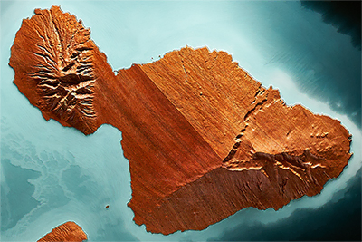

Selected Works
A selection of works,
each one-of-one,
shaped by place, story, and craft.
Commission Your Place
Each finished work begins with a place, a relationship, and a set of choices made in collaboration.
Begin a commission